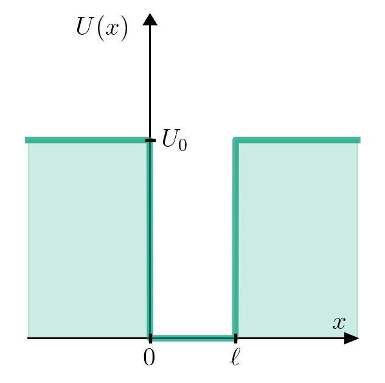
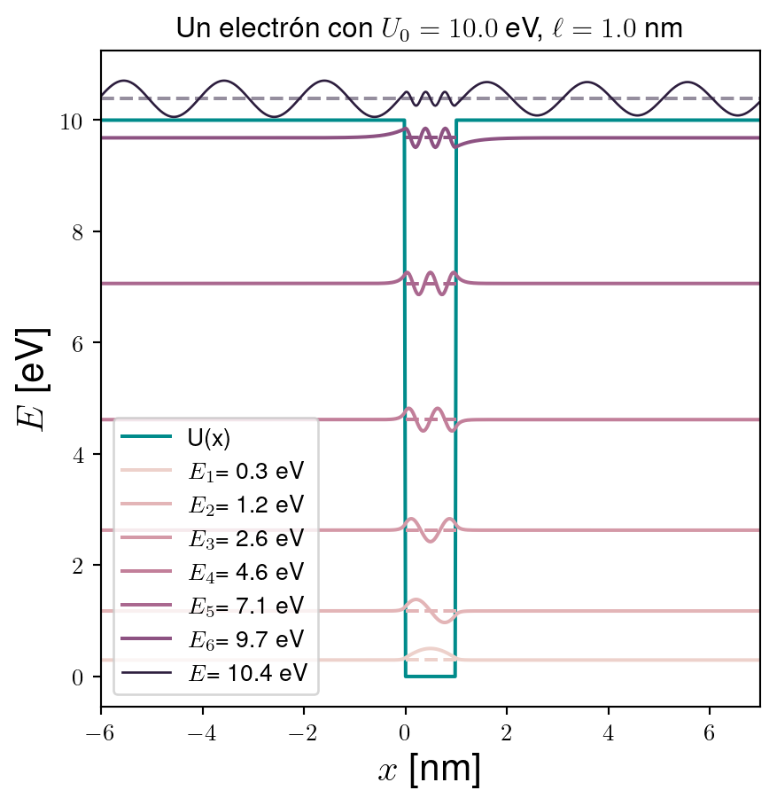

7 Partícula en un potencial rectangular
\[ \definecolor{magenta}{RGB}{255,0,144} \newcommand{\cparentesis}[1]{ {\color{magenta} #1} } \newcommand{\iprn}{\cparentesis{(}} \newcommand{\fprn}{\cparentesis{)}} \newcommand{\ii}{{\rm i}} \]
Consideremos una partícula con energía potencial
\[ U(x) = \left\{ \begin{array}{ll} U_0 & x<0 \\ 0 & 0<x<\ell \\ U_0 & \ell<x \end{array} \right. \]
Tenemos dos casos posibles, \(E>U_0\) y \(E<U_0\).
7.1 Caso \(E<U_0\)
7.2 Caso \(E>U_0\)
7.3 Visualización de la solución
Code
from pylab import *
# -- Resolución numérica --
#
# Necesitamos los valores de las constantes
# ħ²/2me (en unidades "adecuadas")
#
ħ = 0.6582119514 # [eV fs]
e = 1.602e-19 # 1 eV = 1.602e-19 J
c = 299792458 # [m/s]
massfactor = e/c/c # 1 eV/c^2 = 1.79e-36 kg
me = 9.109e-31/massfactor # [eV/c^2] = 0.5x10^6 eV/c^2
c_nmfs = 299.792458 # [nm/fs]
ħ2_2me = ħ*ħ*c_nmfs*c_nmfs/2/me # eV nm^2
N = 2**13+1 # Número de puntos a considerar
xinf = 100.0 # nm
ℓ = 1.0 # nm
x = linspace(-xinf,xinf,N) # Puntos donde obtendremos las funciones
Δx = x[1]-x[0] # Δx es el mismo para todas las funciones
U0 = 10.0 # eV
U = zeros(N)
index = logical_or(x<0, x>ℓ)
U[index] = U0
Mdd = 1./(Δx*Δx)*( diag(ones(N-1),-1) -2*diag(ones(N),0) + diag(ones(N-1),1))
H = -ħ2_2me*Mdd + diag(U)
E,ψT = eigh(H)
ψ = transpose(ψT)
# -- Graficación --
import seaborn as sns
# Definimos el entorno de graficación
fig,axes = plt.subplots(ncols=1,nrows=1,figsize=(5,5))
# fig: objeto que contiene el marco donde se encontrará la gráfica
# axes: objeto que contiene los ejes donde se graficará
axes.set_title("Un electrón con "+r"$U_0={0:.1f}$ eV, $\ell={1:.1f}$ nm".format(U0,ℓ))
axes.set_xlim(-6*ℓ,6*ℓ+ℓ)
axes.plot(x,U,c="#008b8b",label="U(x)")
index = E<U0
itera = [i for i, x in enumerate(index) if x]
num_shades = len(itera)
color_list = sns.cubehelix_palette(num_shades)
for i in itera:
axes.plot(x,E[i]+ψ[i],label=r"$E_{0}$={1:>8.1f} eV".format(i+1,E[i]),c=color_list[i])
for i in itera:
axes.plot([0,ℓ],[E[i],E[i]],'--',c=color_list[i])
axes.set_xlabel("$x$ [nm]",fontsize=16)
axes.set_ylabel("$E$ [eV]",fontsize=16)
axes.legend(loc=3)
plt.show()Code
# Definimos el entorno de graficación
fig,axes = plt.subplots(ncols=1,nrows=1,figsize=(5,5))
# fig: objeto que contiene el marco donde se encontrará la gráfica
# axes: objeto que contiene los ejes donde se graficará
axes.set_title("Un electrón con "+r"$U_0={0:.1f}$ eV, $\ell={1:.1f}$ nm".format(U0,ℓ))
axes.set_xlim(-6*ℓ,6*ℓ+ℓ)
axes.plot(x,U,c="#008b8b",label="U(x)")
index = E<U0
itera = [i for i, x in enumerate(index) if x]
num_shades = len(itera)
color_list = sns.cubehelix_palette(num_shades)
for i in itera:
axes.plot(x,E[i]+12*ψ[i]*ψ[i],label=r"$E_{0}$={1:>8.1f} eV".format(i+1,E[i]),c=color_list[i],lw=1.0)
for i in itera:
axes.plot([0,ℓ],[E[i],E[i]],'--',c=color_list[i])
axes.set_xlabel("$x$ [nm]",fontsize=16)
axes.set_ylabel("$E$ [eV]",fontsize=16)
axes.legend(loc=3)
plt.show()Code
# -- Graficación --
import seaborn as sns
# Definimos el entorno de graficación
fig,axes = plt.subplots(ncols=1,nrows=1,figsize=(5,5))
# fig: objeto que contiene el marco donde se encontrará la gráfica
# axes: objeto que contiene los ejes donde se graficará
axes.set_title("Un electrón con "+r"$U_0={0:.1f}$ eV, $\ell={1:.1f}$ nm".format(U0,ℓ))
axes.set_xlim(-6*ℓ,6*ℓ+ℓ)
axes.plot(x,U,c="#008b8b",label="U(x)")
index = E<U0
itera = [i for i, x in enumerate(index) if x]
num_shades = len(itera)+3
color_list = sns.cubehelix_palette(num_shades)
for i in itera:
axes.plot(x,E[i]+ψ[i],label=r"$E_{0}$={1:>8.1f} eV".format(i+1,E[i]),c=color_list[i])
for i in itera:
axes.plot([0,ℓ],[E[i],E[i]],'--',c=color_list[i])
indexValue = len(itera)+200
axes.plot(x,E[indexValue]+20*ψ[indexValue],label=r"$E$={1:>8.1f} eV".format(indexValue+1,E[indexValue]),c=color_list[-1],lw=1.0)
axes.plot([-6*ℓ,6*ℓ+ℓ],[E[indexValue],E[indexValue]],'--',c=color_list[-1],alpha=0.5)
axes.set_xlabel("$x$ [nm]",fontsize=16)
axes.set_ylabel("$E$ [eV]",fontsize=16)
axes.legend(loc=3)
plt.show()